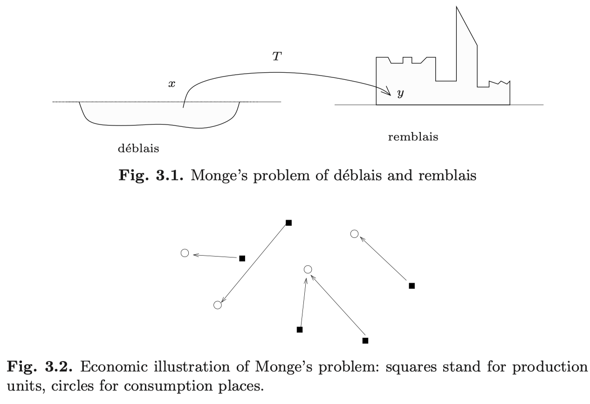

最適輸送とそのエントロピー緩和
Iterative Proportional Fitting / Sinkhorn-Knopp Algorithm
2024-03-13
A Blog Entry on Bayesian Computation by an Applied Mathematician
$$
$$
最適輸送問題は，変分法の黎明期に提案された，変分問題の１つである．
しかし，Lagrange と Hamilton による解析力学の変分原理や，Plateau 問題から続く極小曲面の理論と違い，最適輸送問題は変分法の黎明期に提案されたにも拘らず，その発展は大きく遅れた．
実際，(Monge, 1781) の問題が解かれたのは (Brenier, 1987)，(Kantorovich, 1942) が拡張した形が厳密に解かれたのは独立な結果 (Evans and Gangbo, 1999), (Ambrosio, 2003) まで待つ必要がある．
そこで，本章では変分法の歴史（第 1 節）を見ることから始め，続いて (Kantorovich, 1942) の定式化と双対性理論を見る（第 2 節）．
Kantorovich の問題は離散空間上に限っていたが，一般の Polish 空間上の理論を第 3 節でみる．最後にまとめる（第 4 節）．
変分法 (calculus of variations) とは，関数空間上の関数（汎函数という）の最適化問題をいう．
歴史上，最初に解析的な解答が与えられた変分法の問題は Fermat の原理 (Fermat, 1657) である (Goldstine, 1980)．
これは 光の経路は，進むのにかかる時間が停留するような曲線として実現される というものであり，この原理から光の直進性や反射・屈折の法則が導かれる．
実は約 200 年後の Hamilton は，自身の名前も冠されている Hamilton 力学の研究の前に光学の研究を行なっている．
そこで光の反射・屈折などの法則から Fermat の原理を逆に導き，２つの定式化が等価であることを導いた (中根美知代, 2000)．その際に用いた表現が「特性関数」と呼んだ汎函数 \(I\) に関する変分原理 \[ \delta I=\delta\int\nu(x,y,z)\,d\rho=0 \] である．ただし \(\nu\) は屈折率，\(\rho\) は線分要素であり，\(\delta\) は Lagrange の変分作用素である．
Hamiltonian はこの定式化を光学から力学に拡張し，Hamilton 形式の力学となった．現代では Hamiltonian と呼べる量は (Hamilton, 1834) で最初に出現し，「主関数」と呼ばれている (中根美知代, 2000)．主関数 \(I\) に対して \(\delta I=0\) が成り立つことと，Euler-Lagrange 方程式が成り立つことが同値になる．1
続いて (Bernoulli, 1696) にて John Bernoulli が 最急降下曲線 (Brachistochrone problem) 2 を自身の著書で取り上げた．
「誰も答えられなかった場合は自分の回答を発表する」というスタイルが挑戦的で，Leibniz, Newton など多くの数学者がこれに取り組んだ．John 自身は「最速の粒子の軌道は光と同じ原理で進むはずだ」との仮定から，Fermat の原理の繰り返しと見ることで幾何学的にこの問題を解いた (Levi, 2014)．
同時に関連する複数の「変分問題」を発表した．これを (Euler, 1744) が組織的に取り上げるとともに，変分法 の名前をつけた．
(Euler, 1744) は曲線全体の集合 \[ \Omega(x_0,x_1):=\left\{\gamma\in C^\infty([t_0,t_1])\,\middle|\,\gamma(t_0)=x_0,\gamma(t_1)=x_1\right\} \] 上の汎函数 \[ S(\gamma):=\int^{t_1}_{t_0}L\circ\gamma\,dt \] の極値を求める一般的な方法（のちに Euler-Lagrange 方程式として知られる）を示し，それを 100 以上の具体的な問題で検証した (Goldstine, 1980)．
しかし (Euler, 1744) は専ら幾何学的な手法を用いており，「幾何学的でない方法の開発が望まれる」という但し書きが p.52 に付けられているという．
これに対して当時 19 才であった Lagrange が Euler に自身のアイデアを手紙に綴り，すぐさま非凡なアイデアを感得した Euler は Lagrange を呼び出した．
Lagrange の方法は，変分作用素 \(\delta\) を用いた完全に代数的なもので，実際 (Lagrange, 1788) は一才の図表や幾何学的な議論がなく，Newton 力学が完全に代数・解析化されている．
Euler ものちに Lagrange の方法が優れていることを認め，自身のスタイルを完全に Lagrange の方法に移した．
一方で近年，Euler の方法は具体的な構成を与えることと，数値解法との相性が良いことから，直接法 (direct method) として復活を見ている (Hanc, 2017)．
Lagrange は 1760 年に，与えられた境界条件を満たす曲面の中で面積が最小になるものを決定するという，現代でいう プラトー問題 を定式化した．
これは現在でも変分法の中心問題の一つである．特に，一般の \(n\) 次元 Euclid 空間内の \(k\) 次元曲面に関するプラトー問題は，\(k\le n-2\) の場合や \(n\ge8\) の超曲面の場合に解が滑らかでないことがある．
最適輸送の問題はフランス革命の最中に (Monge, 1781) によって考えられた．
論文のタイトルにある déblai とは掘削現場の残土のことであり，remblai は建築時の盛り土を指す．
掘削現場と建築現場が分離している際に，どの地点からどの地点に土をどれほど運べば，最もコストが低く済むかを考えることが Monge の問題である．

現代的には \(\mathbb{R}^3\) 上のコスト \[ c(x,y):=\lvert x-y\rvert \] に関する最適輸送問題である．
しかし (Monge, 1781) では決定論的な解，すなわち「１箇所の掘削現場の土は全て同一の現場に輸送し，複数箇所に分割して輸送することはない」という状況に限って考察していた．
しかし，曲線や力学の変分問題や Plateau 問題とは異なり，(Kantorovich, 1942) が独立に定式化するまで，ほとんど目ぼしい発展はなかったのである！
これは他の問題と比べて確率論が重要な位置をしめるため，特に定式化が難しかったためだろうと考えられる (Ambrosio and Quarteroni, 2024)．実際，公理的な確率論の展開は (Kolmogorov, 1933) まで待つ必要があった．
実際，Monge の問題が厳密に解かれたのは独立な結果 (Evans and Gangbo, 1999), (Ambrosio, 2003) まで待つ必要がある．
なお，のちに (Kantorovich, 1948) にて Monge の問題と関連づけているが，Kantorovich ははじめは Monge の議論がすでに存在することを知らなかったという (Vershik, 2013)．
最適輸送は数学，特に偏微分方程式論，非線型解析の分野で重要な道具になりつつあるが，その遥かに前から最適化，経済学の分野で活躍を始めた．
特に，Leonid Kantorovich は線型計画法による解決から，ノーベル経済学賞を与えられている．
この章では Kantorovich のオリジナルの理論を離散の場合に見て，次章 3 で一般の確率測度に対して一般化する．
\(\mathbb{R}^d\) 上の２つの点群 \(\{x_i\}_{i=1}^n,\{y_j\}_{j=1}^m\subset\mathbb{R}^d\) が重み \(a\in\mathbb{R}^n,b\in\mathbb{R}^m\) 付きで与えられているとする： \[ \sum_{i=1}^na_i=\sum_{j=1}^mb_j=1. \]
\((x,a)\) と付値された資源を \((y,b)\) の状態に運ぶ計画の全体は，\(a,b\) を周辺分布にもつ結合分布の全体として \[ U(a,b):=\left\{P\in M_{n,m}(\mathbb{R})\,\middle|\,P\ge 0,\sum_{j=1}^mP_{ij}=a_i,\sum_{i=1}^nP_{ij}=b_j\right\} \] と表せる．3
この輸送計画のうち，コスト \(C=(c(x_i,x_j))\in M_{n,m}(\mathbb{R})\) に関する輸送コストを最小にする計画を見つける問題を (Kantorovich, 1942) の問題 という： \[ \min_{P\in U(a,b)}(C|P)_\mathrm{HS}=\min_{P\in U(a,b)}\sum_{i=1}^n\sum_{j=1}^mC_{ij}P_{ij}. \]
実はこの問題は，凸制約 \(P\ge0\) の下での，線型目的関数 \((C|P)_\mathrm{HS}\) の最小化問題になっている．
従って，simplex 法などの線型計画法により解くことができる．
特に \(c(x,y)=d(x,y)^p\) と取った場合，最適輸送コスト \[ W_c(a,b) = \min_{P \in U(a,b)}(C|P) \] は点群の間の距離を定める．
このような構成は \(E\) の距離 \(d\) の構造のみに由来するため，Euclid 空間に限らず実行可能である．
すなわち最適輸送の考え方は，コスト \(c\) または損失 \(l\) さえ定義可能であれば，極めて一般の空間上に距離を定義することに使える．
特に距離 \(d\) の性質を考慮した最適輸送距離は，機械学習において自然な損失関数を与える (5.6節 Figalli and Glaudo, 2023), (佐藤竜馬, 2023), (Figalli and Ambrosio, 2024)．
前節では離散空間の場合を扱った．
一般的には最適輸送問題の解は カップリング によって与えられる．
カップリングとは確率論的な概念であり，「輸送計画」を数学的に表現する格好の概念である．
逆に言えば解の表現に確率論的な発想が必要であった点が，力学や Plateau 問題における曲線や曲面が解となる変分問題とは違い，変分問題の中でも異色なものであると言える．
そこでまずカップリングの概念を定義し，一般の空間上での最適輸送問題を定式化する．
可測空間 \(E\) 上の２つの確率分布 \(\mu,\nu\in\mathcal{P}(E)\) の カップリング または 輸送計画 とは，\(\mu,\nu\) を２つの周辺分布にもつ \(E^2\) 上の Radon 確率測度 \(\pi\in P(E^2)\) をいう．
カップリングの全体を \[ C(\mu,\nu):=\left\{\pi\in P(E^2)\:\middle|\:\substack{(\mathrm{pr}_1)_*\pi=\mu,\\(\mathrm{pr}_2)_*\pi=\nu.}\right\} \] で表す．4
この名前の由来は，次の分解を与える 確率核 \(P\) を考えるとわかる： \[ \pi(dxdy)=\mu(dx)P(x,dy) \]
最適輸送問題は２地点間の輸送コストを表す関数 \[ c:E\times E\to\mathbb{R}_+ \] と，開始・終了時点での資源の密度分布 \(\mu,\nu\in\mathcal{P}(E)\) に関して定まるもので，輸送にかかる総コストの最小化を図る．
輸送計画はカップリング \(\kappa\in C(\mu,\nu)\) として定式化でき，このことを用いると Kantorovich の最適輸送問題 は \[ \min_{\kappa\in C(\mu,\nu)}\int_{E\times E}c(x,y)\kappa(dxdy) \] と定式化できる．
一方で Monge の最適輸送問題 は，この解を Monge カップリングの中で探す（第 1.5 節）．6
この制約は極めて強く，一般に解が存在するとは限らない．実際 Monge の問題では，一箇所の資源を分割しそれぞれを別の目的地に運ぶことが許されないから，Delta 測度は Delta 測度以外に輸送することが出来ないことになる．7
Kantorovich の最適輸送問題は，極めて一般的な設定で最適カップリング \(\pi\in C(\mu,\nu)\) の存在が保証される．
さらに，\(c\) が \(E\) 上の距離様の関数である場合，最適輸送コストも距離様の性質を満たすため，確率分布の間の距離を構成することができる．
\(d:E\times E\to\mathbb{R}_+\) は距離公理のうち三角不等式のみ満たさない可測関数とする．これを 半距離 とここでは呼ぶ．
連続体力学における連続方程式，多孔質媒体方程式をはじめとして，種々の方程式は密度 \(\rho_t\) に関する微分方程式になっている．
だが，密度とは本質的に確率測度として理解できる．物理的には点群であるような対象は，むしろ確率測度と見た方が直接的である．
１つの方程式を関数方程式と測度方程式の両面で解釈することができるとき，前者を Euler 流，後者を Lagrange 流の解釈ともいう (Villani, 2009, p. 14)．
最適輸送理論の大きな貢献の１つに，従来 Euler 流に解釈されていたものを，Lagrange 流に解釈し直す方法を与えることが挙げられる (Ambrosio and Quarteroni, 2024)．
これは \(\mathcal{P}(M)\) 上の PDE に対する特性曲線法と見ることもできる．11
Schrödinger 橋問題 (Schrödinger, 1931), (Schrödinger, 1932) は，確率過程の分布の空間 \(\mathcal{P}(C([0,1];\mathbb{R}^d))\) 上の次の変分問題である：
Springer Math Podcast では 2023 年に最適輸送に関連する Podcast を３つ発表しており，(Ambrosio and Quarteroni, 2024), (Figalli and Ambrosio, 2024), (Gigli and De Lellis, 2024) はその記事化である．最適輸送について深入りする前に，数学的な背景を知ったり，モチベーションを上げるために格好である．
ホロノミック拘束系などでは．↩︎
3blue1brown の YouTube 動画 も参照．↩︎
輸送多面体 (transportation polytope) という．コスト行列 \(C\) との衝突を防ぐため，ここでは \(U(a,b)\) と表した．↩︎
(Villani, 2009, p. 6), (Def. 1.4.1 Figalli and Glaudo, 2023) も参照．↩︎
(Figalli, 2023, p. 3), (Figalli and Glaudo, 2023) に従った．↩︎
しかし，任意の連続分布の間には輸送写像が存在する． (Figalli and Glaudo, 2023, p. 9)．↩︎
(Kulik, 2018, p. 122), (Villani, 2009, p. 10) も参照．↩︎
(Kulik, 2018, p. 124) 命題4.3.3，(Villani, 2009, p. 10) も参照．↩︎
(Ambrosio et al., 2008, p. 183) 定理8.3.1 は (Villani, 2009, p. 14) にも取り上げられている．↩︎
(Villani, 2009, p. 19) Bibliographical notes も参照．↩︎